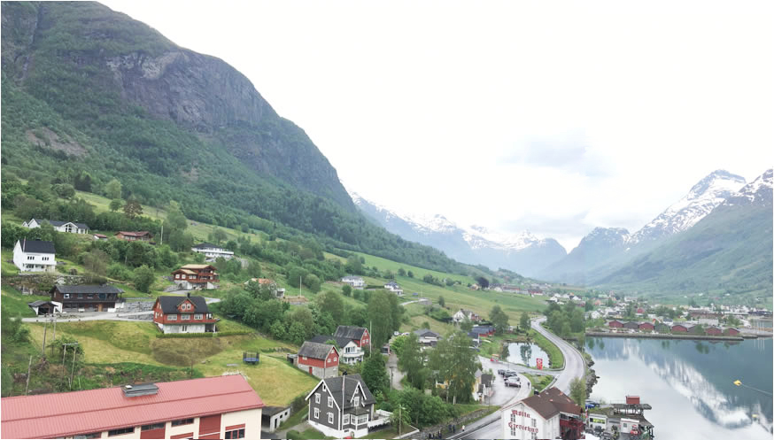
This sleepy little hamlet is defined by a great giant, the Jostedals Glacier which surrounds Olden on three sides, an eternal reminder that ice and winter is king. It has also been a strategically important spot on the fjord for centuries, resting on the base of three converging valleys.
Olden is one of nine small bergs in the municipality of Stryn (from the Old Norse meaning 'strong stream'). People have been living a quiet existence here since the Stone Age.
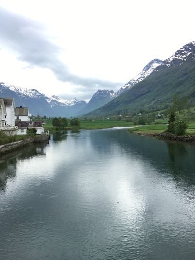
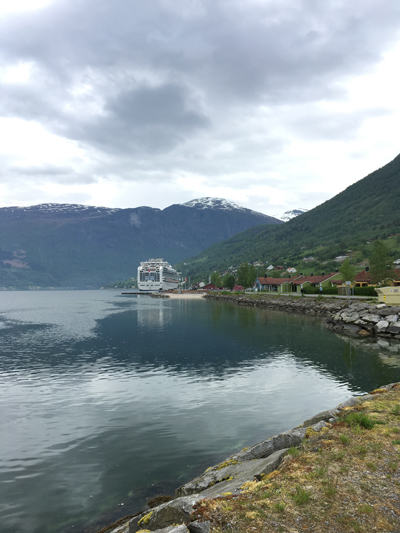
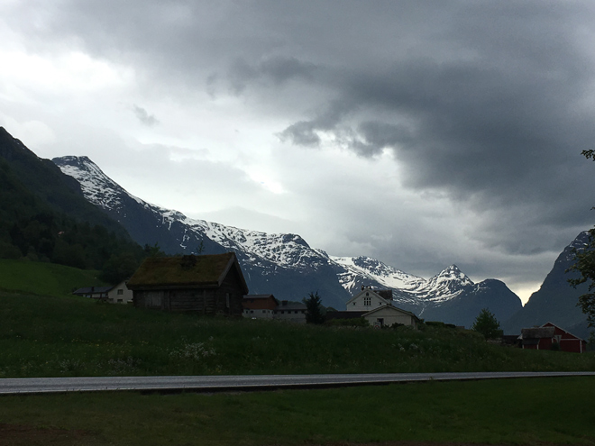
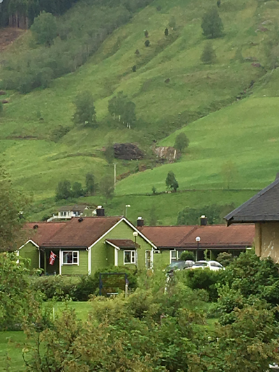
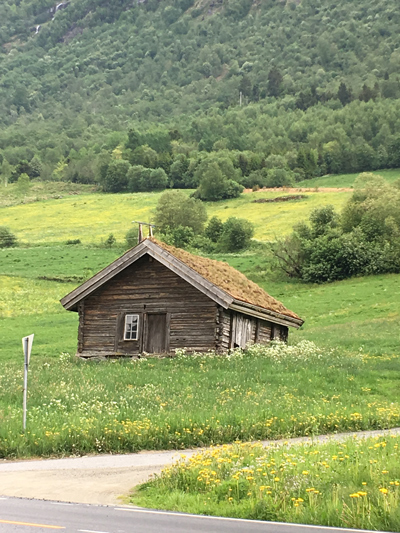
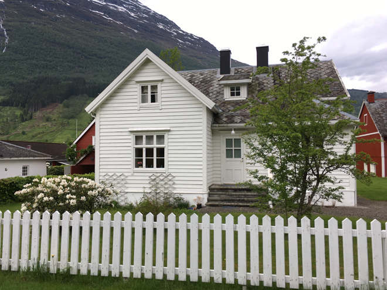
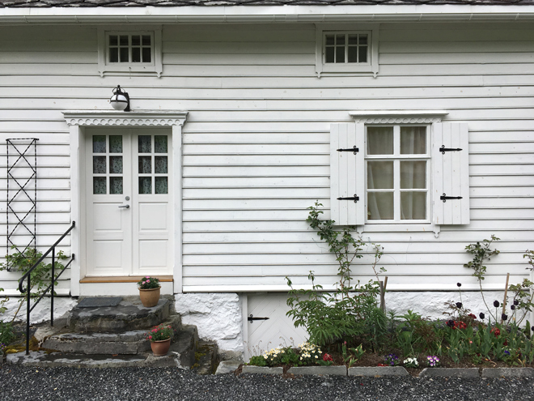
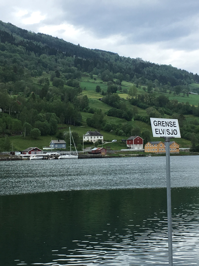
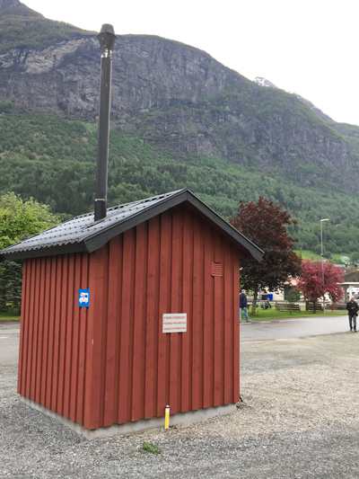
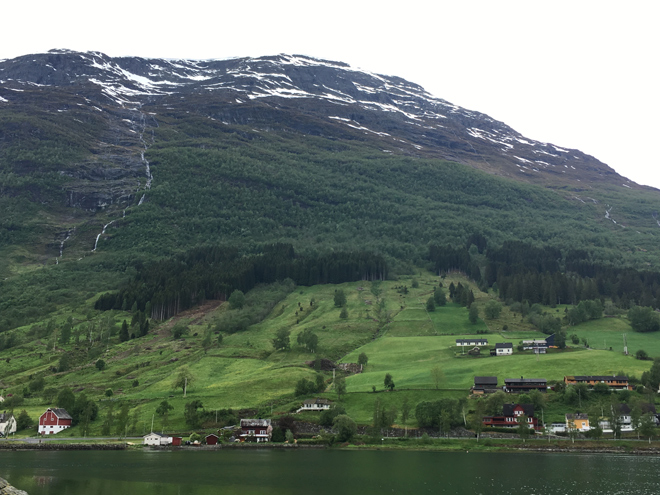
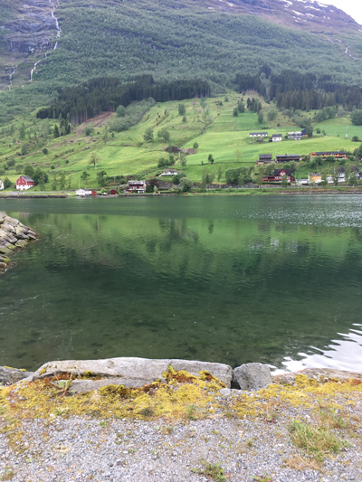
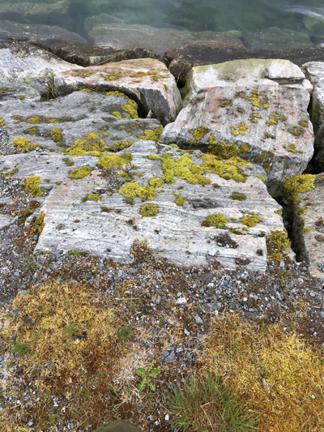
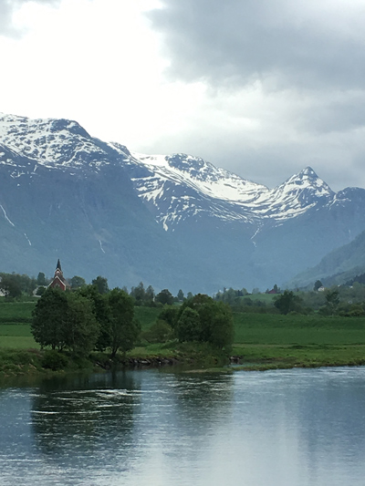
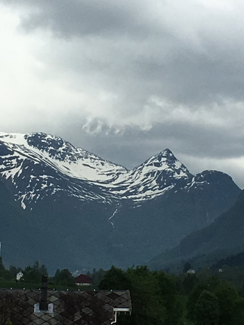
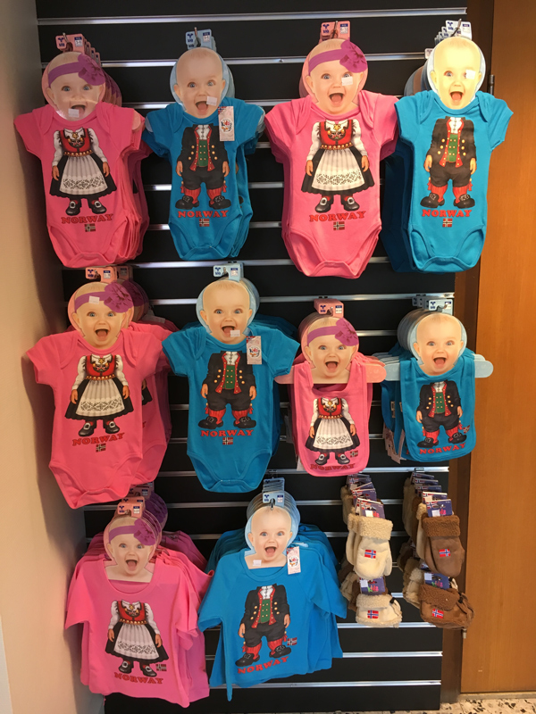